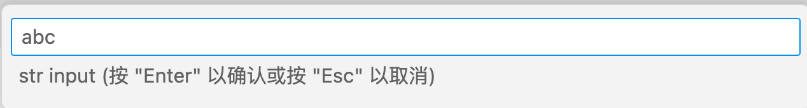

2.3 Task进阶
前一节展示了Task的基本用法和流程，本节我们尝试通过VS Code自身的能力简化Task启动，同时希望给Task增加更多的灵活性。
2.3.1 Task配置规范
task.js文件对应的数据结构由TaskConfiguration定义：
interface TaskConfiguration {
version: '2.0.0';
tasks?: TaskDescription[];
}
首先是Task文件对应的规范版本号，然后是tasks定义的任务列表（此外还有windows、osx、linux分别对应不同系统的任务）。每个Task由TaskDescription定义：
interface TaskDescription {
label: string; // The task's name
type: 'shell' | 'process';
command: string;
args?: string[];
options?: CommandOptions;
group?: 'build' | 'test' | { kind: 'build' | 'test'; isDefault: boolean };
dependsOn?: string[];
}
前三个label、type、command是必须提供的，分别定义任务的名称、任务类型和对应的命令。可选的args定义命令行的参数，可选的options定义命令的上下文环境，可选的group定义分组（目前有build和test），dependsOn则定义Task之间的依赖关系。
命令后的上下文由CommandOptions定义：
export interface CommandOptions {
cwd?: string;
env?: { [key: string]: string };
}
主要是当前Task执行时的工作目录和环境变量。
2.3.2 MnBook工作流Task
本书采用 MnBook 构建，这是凹语言社区开发的精简版的 Markdown 图书构建工具。为了提高工作效率我们可以构建一个MnBook预览Task。具体需要以下流程：首先在仓库根目录命令行环境通过 mnbook build 命令构建出 book 子目录，然后用浏览器打开 ./book/index.html 文件预览。因此我们先假定本地已经安装有 mnbook 命令。
配置 task.json 文件整体结构如下：
{
"version": "2.0.0",
"tasks": [
{
"label": "mnbook-build",
// 待补充
},
{
"label": "mnbook-preview",
// 待补充
},
{
"label": "mnbook-clean",
// 待补充
}
]
}
每个Task的label指定其唯一的名字。分别有 mnbook-build/mnbook-preview/mnbook-clean 三个Task，分别对应构建、预览和清理三个常用操作。
2.3.2.1 mnbook-build Task
MnBook的构建命令的常用形式为mnbook build [dir]，其中[dir]是可选的要构建的电子书根目录，如果省略目录则默认为当前目录。完整的命令配置如下：
{
"label": "mnbook-build",
"type": "shell",
"command": "mnbook",
"args": ["build", "${workspaceFolder}/../.."]
},
Task的名字为mnbook-build，依然是一个shell命令：command指定命令，args指定参数列表。参数中的${workspaceFolder}是VS Code的内置变量，表示当前工作区的根目录。
2.3.2.2 mnbook-preview Task
预览是通过本地命令打开默认的浏览器，打开构建后的页面完成。命令配置如下：
{
"dependsOn": ["mnbook-build"],
"label": "mnbook-preview",
"type": "shell",
"osx": {
"command": "open",
"args": [
"${workspaceFolder}/../../book/index.html"
]
},
"linux": {},
"windows": {},
}
其中dependsOn该任务依赖mnbook-build任务完成构建。然后通过osx指定macOS系统下的打开浏览器的命令，另外的linux和windows系统的打开浏览器的方式可以参考代码。
2.3.2.3 mnbook-clean Task
MnBook清除命令是删除构建生成的book命令，任务的配置参数如下：
{
"label": "mnbook-clean",
"type": "shell",
"command": "rm",
"args": ["-rf", "${workspaceFolder}/../../book"]
}
这里使用的是rm命令只能在macOS和Linux等类UNIX系统工作，windows下的配置读者可以自行完善。
2.3.3 常用配置变量
在前面的Task中，我们通过${workspaceFolder}内置变量来定位工作区目录，然后再通过相对路径来指定参数的路径。为了方便VS Code预定义了一组常用的配置变量，下面是比较常用的部分：
${userHome}- 用户主文件夹的路径${workspaceFolder}- 在 VS Code 中打开的文件夹的路径${file}- 当前打开的文件${fileWorkspaceFolder}- 当前打开文件的工作区文件夹${cwd}- VS Code 启动时任务运行器的当前工作目录${lineNumber}- 活动文件中当前选定的行号${selectedText}- 活动文件中当前选定的文本${execPath}- 正在运行的 VS Code 可执行文件的路径
我们不仅仅可以获取工作区目录路径，还可以获得当前打开的文件路径、当前打开文件对应的工作区路径、以及当前光标位置等信息。
除了工作区相关的配置，VS Code配置参数也可以通过${config:Name}的形式获取。比如${config:editor.fontSize}对应字体大小，以下命令打印当前配置的字体大小：
{
"label": "echo-fontSize",
"type": "shell",
"command": "echo",
"args": ["fontSize:", "${config:editor.fontSize}"]
},
这些预定义的配置变量不仅仅可以在Task中使用，也可以在后续的插件开发中使用。
2.3.4 用户自定义环境变量
在前面几个Task中，${workspaceFolder}/../..路径出现了多次，是否可以通过定义一个中间配置变量来减少重复代码呢？我们可以通过自定义环境变量来实现类似的效果：
{
"version": "2.0.0",
"options": {
"env": {
"BOOK_ROOT": "${workspaceFolder}/../.."
}
},
"tasks": [
{
"label": "mnbook-build",
"type": "shell",
"command": "mnbook",
"args": ["build", "${BOOK_ROOT}"]
},
{
"dependsOn": ["mnbook-build"],
"label": "mnbook-preview",
// ...省略...
},
{
"label": "mnbook-clean",
"type": "shell",
"command": "rm",
"args": ["-rf", "${BOOK_ROOT}/book"]
},
]
}
在options和env属性定义环境变量BOOK_ROOT，环境变量的值依然可以使用VS Code预定义的配置变量。然后在Task的命令参数中通过${BOOK_ROOT}引用环境变量，可以通过这种方式尝试减少冗余代码。
2.3.5 Task的输入参数
有时候需要在Task执行时有用户输入一些参数，VS Code提供了输入框、下拉列表选择和命令集成等方式。比如下面的Task分别通过输入字符串和下拉列表获取参数，然后通过echo输出信息：
{
"version": "2.0.0",
"inputs": [
{
"id": "str",
"type": "promptString",
"description": "str input"
},
{
"id": "pick-value",
"type": "pickString",
"description": "pick value",
"options": [
"KCL - https://kcl-lang.io",
"凹语言 - https://wa-lang.org",
"CodeBlitz - https://codeblitz.cloud.alipay.com/zh"
],
}
],
"tasks": [
{
"label": "echo-str",
"type": "shell",
"command": "echo ${input:str}",
},
{
"label": "echo-pick-value",
"type": "shell",
"command": "echo ${input:pick-value}",
},
]
}
执行时输入效果如下：


输入字符串时还可以通过设置password来隐藏输入框的字符：
{
"id": "password",
"type": "promptString",
"description": "input password",
"password": true
}
输入密码的效果如下：

2.3.6 Task中启动Command
在第1章中我们构建了一个helloworld.helloWorld命令，也可以从Task中启动这个命令。首先通过“Code -> 首选项 -> 键盘快捷方式”打开所有命令的快捷键配置，找到之前安装的 hello 插件注册的命令，通过右键菜单拷贝出命令ID。如图所示：
对应以下的Task配置：
{
"version": "2.0.0",
"tasks": [
{
"label": "hello-command",
"type": "shell",
"command": "${command:helloworld.helloWorld}"
},
]
}
${command:helloworld.helloWorld} 表示安装的Hello插件注册的命令，比如通过${command:workbench.action.showCommands}可以显示全部的命令列表，${command:welcome.showNewFileEntries}可以创新新的文件，这样可以通过Task串联其他的VS Code功能。
2.3.7 键盘快捷键
具体的Task本身无法绑定键盘快捷键，快捷键配置都是绑定到命令上。同时当前版本VS Code不支持工作区定制键盘快捷键，只支持针对全局和当前用户定制。具体可以参考“Code -> 首选项 -> 键盘快捷方式”操作界面。